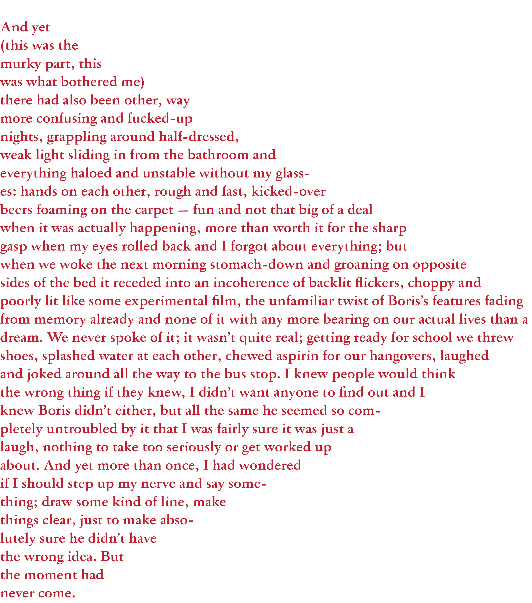

And yet (this was the murky part, this was what bothered me) there had
also
been other, way more confusing and fucked-up nights, grappling around
half-
dressed, weak light sliding in from the bathroom and everything
haloed and
unstable without my glasses: hands on each other, rough and fast,
kicked-
over beers foaming on the carpet — fun and not that big of a deal when
it was
actually happening, more than worth it for the sharp gasp when my eyes
rolled
back and I forgot about everything; but when we woke the next
morning
stomach-down and groaning on opposite sides of the bed it receded into
an
incoherence of
backlit flickers, choppy and poorly lit like some experimental
film, the unfamiliar twist of Boris’s
features fading from memory already
and none of it with any more bearing on our actual
lives than a dream. We
never spoke of it; it wasn’t quite real; getting ready for school we
threw
shoes,
splashed water at each other, chewed aspirin for our hangovers, laughed and
joked around all the way to the bus stop. I knew people would think the wrong
thing if they knew, I didn’t want anyone to find out and I knew Boris
didn’t
either, but all the same he seemed so completely
untroubled by it that I was
fairly sure it was just a laugh, nothing to take too
seriously or get worked
up
about. And yet more than once, I had wondered if I should step up my nerve
and say something; draw some kind of line, make things clear, just to make
absolutely sure he didn’t have the wrong idea. But the
moment had never come.